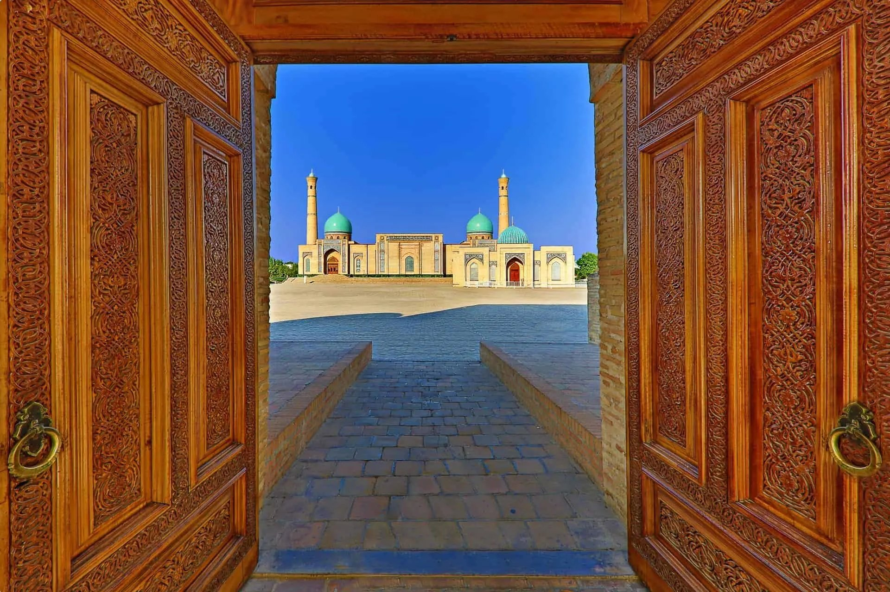
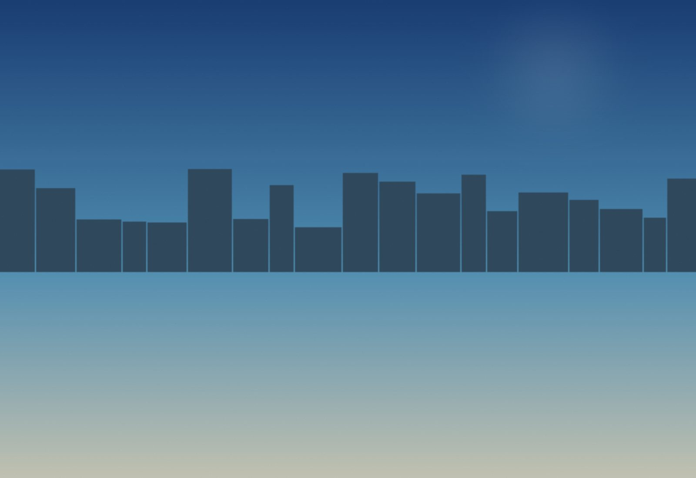
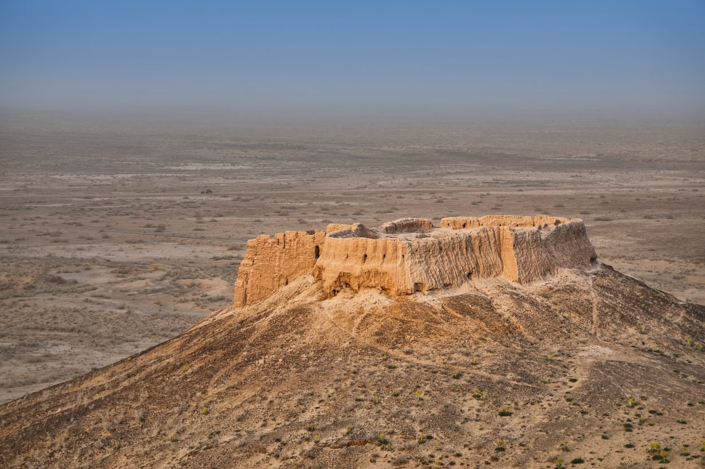

Día 1 · Llegada
Llegada a Tashkent
Recepción privada, traslado al hotel. Cena de bienvenida con presentación del historiador en piso.


Tesoros de la Ruta de la Seda · Edición septiembre 2026
Ver fechas y preciosUzbekistán es el corazón redescubierto de la Ruta de la Seda. Durante mil años, las caravanas que cruzaban entre China y el Mediterráneo se detenían a comerciar, dormir y rezar en Khiva, Bujará y Samarcanda. Hoy las tres ciudades-oasis siguen en pie, en gran parte intactas, con sus madrasas tiladas en azul cobalto, sus zocos cubiertos del siglo XV, y sus mausoleos timúridas.
Las recorremos en orden geográfico —de oeste a este, como las caravanas— en grupo pequeño, con historiador en piso, acceso fuera de hora a la Plaza Registán de Samarcanda y al Corán de Caliph Uthman (original del siglo VII), y noches en madrasas convertidas en hoteles boutique. Once días para entender por qué Bujará fue capital del Imperio Samánida, y por qué Samarcanda fue durante un siglo entero la ciudad más rica del planeta.

La plaza más fotografiada de Asia Central, abierta sólo para nuestro grupo al amanecer, con historiador del sitio explicando los tres madrasas.
Acceso al manuscrito del siglo VII en Khast Imam, Tashkent — uno de los cuatro Coranes originales que sobreviven en el mundo, en una visita privada con conservador.
Ocho horas atravesando el desierto rojo entre Khiva y Bujará, con parada en la fortaleza de Ayaz Kala (Corasmia, siglo IV a.C.) y almuerzo en yurta tradicional.
Recepción privada, traslado al hotel. Cena de bienvenida con presentación del historiador en piso.

Visita privada al complejo Khast Imam con conservador. Mausoleo Yunus Khan, mezquita Hazrat Imam. Vuelo doméstico a Urgench, traslado a Khiva.
Dos días dentro de Itchan Kala, la ciudad amurallada Patrimonio UNESCO. Madrasa Muhammad Amin Khan, mausoleo Pahlavan Mahmud, minarete Kalta Minor (el minarete corto).
Convoy 4x4 de 8 horas a través del desierto rojo. Parada en Ayaz Kala (fortaleza Corasmia siglo IV a.C.) con almuerzo en yurta. Llegada a Bujará al ocaso.

Dos días en el Bujará antiguo: Mausoleo Samánida (siglo IX), Po-i-Kalyan, Madrasa Mir-i-Arab, Lyab-i-Hauz. Cena Sabbat en la sinagoga bukhari-judía. Demostración de Suzani con maestro tejedor.
Tren de alta velocidad Afrosiyob (1h 30 min). Tarde en Samarcanda: Mezquita Bibi-Khanym, Necrópolis Shah-i-Zinda.
Acceso privado a la Plaza Registán antes de la apertura pública, con historiador timúrida en piso. Tarde: Mausoleo Gur-e-Amir (tumba de Timur), Observatorio Ulugh Beg.
Mañana en el molino de papel de Konigil (Davlat Toshev, último maestro del papel de seda samarcandí). Tarde a Shahrisabz, cuna de Timur, con ruinas del Palacio Ak-Saray.
Mañana libre, traslado a Tashkent International.
Sumá días al final del viaje, con salidas privadas.

Vuelo a Nukus + 4x4 a Moynaq, los cementerios de barcos del Mar Aral, una de las catástrofes ambientales del siglo XX.

Margilan (telares de Atlas-ikat) y Rishtan (cerámica de cobalto).

Cruce frontera oeste a la Puerta del Infierno, el cráter de gas ardiendo desde 1971 en el desierto Karakum.
| Salida | Disponibilidad | Precio desde | |
|---|---|---|---|
| 12 sep 2026 | Abierta | $9,800 | Reservar → |
| 19 sep 2026 | Pocas plazas | $9,800 | Reservar → |
| 26 sep 2026 | Abierta | $9,800 | Reservar → |
| 3 oct 2026 | Abierta | $9,800 | Reservar → |
| 10 oct 2026 | Lista de espera | $9,800 | Reservar → |
Precios por persona en habitación doble. Suplemento de habitación individual a consultar.